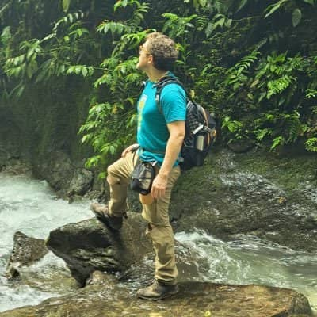

Sebastián Iturralde
About Me
My name is Sebastián, and I am a developer and lifelong student of technology. Currently, I am expanding my technical skills through BYU-Idaho, documenting my journey and projects at BYULabs. I am passionate about building clean, functional web experiences and constantly exploring new frameworks.

Quito, Ecuador
Official Flag of Ecuador
Quito is the capital of Ecuador and the closest capital city to the equator. Situated in the Andes Mountains at an elevation of 2,850 meters, it is the first city to be named a UNESCO World Heritage site. It is famous for its well-preserved colonial center and the "Middle of the World" monument.